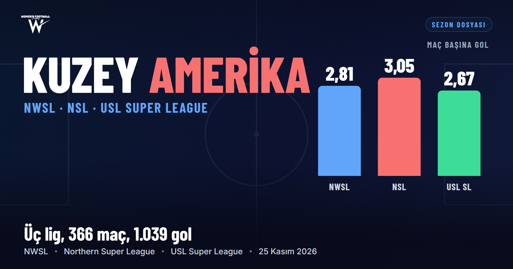

Kuzey Amerika 2026 Rakamlarla: NWSL, Northern Super League ve USL Super League
NWSL'de ve Kanada'nın Northern Super League'inde normal sezon bitti, USL Super League yarı yolda. 366 maç, 1.039 gol: tablolar, golcüler, hiç kenara çıkmayanlar, gençlere süre verenler ve ev sahibi olmanın işe yaramadığı bir lig.

Avrupa'da sezon kızışırken Kuzey Amerika'da iki lig normal sezonu kapattı. NWSL'de 16 takım 30'ar maç oynadı, Kanada'nın ikinci yaşındaki Northern Super League'inde 6 takım 25 maçlık sezonu tamamladı. USL Super League ise üçüncü sezonunun ilk 13 haftasında.
Üç ligi aynı cetvelle ölçtük: tablo, gol, ev sahibi avantajı, kimin hiç oyundan çıkmadığı ve gençlere kimin süre verdiği. Tablolar normal sezonun tablosu; şampiyonluğu belirleyen playoff maçları ayrı.
NWSL 2026
16 takım, 240 maç, 674 gol. Normal sezonun lideri Gotham FC.
Gotham FC 30 maçta 61 puan topladı ve normal sezonu ilk sırada bitirdi. San Diego Wave FC 58, Washington Spirit 55 puanla izledi. Tablonun dibinde Chicago Stars FC 17 puanda kaldı.
NWSL'de maç başına 2,81 gol atıldı; maçların yüzde 46,2 kadarını ev sahibi kazandı.
NWSL 2026: sonuçlar ve tablo
Maç sonuçlarının dağılımı
| # | TAKIM | O | G | B | M | A:Y | AV | P |
|---|---|---|---|---|---|---|---|---|
| 1 | Gotham FC | 30 | 18 | 7 | 5 | 39:23 | +16 | 61 |
| 2 | San Diego Wave FC | 30 | 18 | 4 | 8 | 45:31 | +14 | 58 |
| 3 | Washington Spirit | 30 | 17 | 4 | 9 | 43:28 | +15 | 55 |
| ··· 4.–14. sıralar ··· | ||||||||
| 15 | Racing Louisville FC | 30 | 7 | 3 | 20 | 38:62 | −24 | 24 |
| 16 | Chicago Stars FC | 30 | 5 | 2 | 23 | 17:71 | −54 | 17 |
Normal sezon; tablo maç sonuçlarından hesaplandı. Bütün tablo ve oyuncular: NWSL sayfası.
Gol krallığında Ashley Sanchez (North Carolina Courage) 20 golle zirvede. Hemen arkasında Barbra Banda var: Orlando Pride formasıyla 23 maçta 17 gol. Sophia Wilson (Portland Thorns FC) 15 golle üçüncü. Asistte Croix Bethune (Kansas City Current) 11 asistle ilk sırada.
10 oyuncu 30 maçın tamamında sahadaydı; 3 tanesi kaleci. Gençlerde öne çıkan isim Kimmi Ascanio: 18 yaşında, San Diego Wave FC formasıyla 2.076 dakika. Gençlere en çok süre veren kulüp North Carolina Courage oldu (dakikaların yüzde 32,7 kadarı 21 yaş ve altında).
NWSL 2026: oyuncular
GOL
- 1Ashley SanchezNorth Carolina Courage · 30 maç20
- 2Barbra BandaOrlando Pride · 23 maç17
- 3Sophia WilsonPortland Thorns FC · 28 maç15
- 4Temwa ChawingaKansas City Current · 19 maç12
- 4Trinity RodmanWashington Spirit · 30 maç12
- 4Janine SonisDenver Summit FC · 29 maç12
ASİST
- 1Croix BethuneKansas City Current11
- 2Cloé LacasseUtah Royals FC10
- 3Pietra TordinPortland Thorns FC9
- 4Evelyn ShoresAngel City FC8
- 4Trinity RodmanWashington Spirit8
- 4Janine SonisDenver Summit FC8
HER DAKİKA SAHADA · 30 maç
- ·Kennedy WesleySan Diego Wave FC · Savunma
- ·Kristen McNabbSan Diego Wave FC · Savunma
- ·Sandy MacIverWashington Spirit · Kaleci
- ·Tara RuddWashington Spirit · Savunma
- ·Angelina AndersonAngel City FC · Kaleci
- ·Jessie FlemingPortland Thorns FC · Orta saha
- ·Kate Del FavaUtah Royals FC · Savunma
- ·Kailen SheridanNorth Carolina Courage · Kaleci
- ·Ryan WilliamsNorth Carolina Courage · Savunma
- ·Kaleigh KurtzDenver Summit FC · Savunma
EN AZ 900 DAKİKA: EN GENÇLER
- ·Kimmi AscanioSan Diego Wave FC · 18 yaş2.076dk
- ·Erica Meg ParkinsonNorth Carolina Courage · 18 yaş1.370dk
- ·Alex PfeifferBay FC · 18 yaş1.315dk
Gol ve asist, maç raporlarına göre.
Northern Super League 2026
6 takım, 75 maç, 229 gol. Ev sahibi olmanın neredeyse hiç işe yaramadığı lig.
Montréal Roses 25 maçta 45 puanla ilk sırada bitirdi. Ottawa Rapid FC 40, AFC Toronto 39 puan topladı. Calgary Wild FC 21 puanla son sırada kaldı.
Asıl ilginç rakam sonuçlarda. 75 maçın 24 tanesini ev sahibi, 31 tanesini deplasman takımı kazandı. Ev sahibinin galibiyet payı yüzde 32,0: üç lig içinde en düşük. Gol de en çok burada atıldı, maç başına 3,05.
Northern Super League 2026: sonuçlar ve tablo
Maç sonuçlarının dağılımı
| # | TAKIM | O | G | B | M | A:Y | AV | P |
|---|---|---|---|---|---|---|---|---|
| 1 | Montréal Roses | 25 | 12 | 9 | 4 | 43:27 | +16 | 45 |
| 2 | Ottawa Rapid FC | 25 | 12 | 4 | 9 | 49:44 | +5 | 40 |
| 3 | AFC Toronto | 25 | 10 | 9 | 6 | 38:24 | +14 | 39 |
| ··· 4.–4. sıralar ··· | ||||||||
| 5 | Halifax Tides FC | 25 | 7 | 8 | 10 | 24:24 | 0 | 29 |
| 6 | Calgary Wild FC | 25 | 5 | 6 | 14 | 28:55 | −27 | 21 |
Normal sezon; tablo maç sonuçlarından hesaplandı. Bütün tablo ve oyuncular: Northern Super League sayfası.
Gol krallığında Jessica De Filippo (Vancouver Rise FC) 13 golle ilk sırada. Elyse Bennett (Montréal Roses) 11 gol attı. Asistte Keera Melenhorst (Ottawa Rapid FC) 7 asistle önde.
Lider Montréal Roses tecrübeye yaslandı: dakikalarının yalnızca yüzde 0,7 kadarı 21 yaş ve altına gitti. Öbür uçta AFC Toronto var, yüzde 26,6. Olivia Chisholm henüz 17 yaşında ve AFC Toronto formasıyla 1.049 dakika oynadı.
Northern Super League 2026: oyuncular
GOL
- 1Jessica De FilippoVancouver Rise FC · 25 maç13
- 2Elyse BennettMontréal Roses · 25 maç11
- 3Delaney Baie PridhamOttawa Rapid FC · 21 maç10
- 3Kaylee HunterAFC Toronto · 22 maç10
- 5Lauren RoweAFC Toronto · 25 maç8
ASİST
- 1Keera MelenhorstOttawa Rapid FC7
- 2Florence BelzileOttawa Rapid FC5
- 2Camila ReyesVancouver Rise FC5
- 2Delaney Baie PridhamOttawa Rapid FC5
- 2Anna BoutVancouver Rise FC5
HER DAKİKA SAHADA · 25 maç
- ·Jyllissa HarrisOttawa Rapid FC · Savunma
- ·Sarah RollinsAFC Toronto · Savunma
EN AZ 900 DAKİKA: EN GENÇLER
- ·Olivia ChisholmAFC Toronto · 17 yaş1.049dk
Gol ve asist, maç raporlarına göre.
USL Super League 2026-27
8 takım, ilk 13 hafta, 51 maç. Zirvede Carolina Ascent FC.
Carolina Ascent FC 13 maçta 27 puanla zirvede. DC Power FC 24, Sporting JAX 21 puanla izliyor. Ev sahibi olmak bu ligde işe yarıyor: maçların yüzde 51,0 kadarını ev sahibi kazandı.
USL Super League 2026-27: sonuçlar ve tablo
Maç sonuçlarının dağılımı
| # | TAKIM | O | G | B | M | A:Y | AV | P |
|---|---|---|---|---|---|---|---|---|
| 1 | Carolina Ascent FC | 13 | 8 | 3 | 2 | 20:9 | +11 | 27 |
| 2 | DC Power FC | 13 | 7 | 3 | 3 | 21:12 | +9 | 24 |
| 3 | Sporting JAX | 13 | 5 | 6 | 2 | 26:20 | +6 | 21 |
| ··· 4.–6. sıralar ··· | ||||||||
| 7 | Brooklyn FC | 13 | 3 | 3 | 7 | 13:27 | −14 | 12 |
| 8 | Fort Lauderdale United FC | 13 | 2 | 2 | 9 | 7:23 | −16 | 8 |
Normal sezon; tablo maç sonuçlarından hesaplandı. Bütün tablo ve oyuncular: USL Super League sayfası.
Gol krallığında üç isim 9 golle eşit: Catherine Barry (Lexington SC), Ashlyn Puerta (Sporting JAX) ve Baylee DeSmit (Sporting JAX). Üçünden ikisi aynı takımdan. Carolina Ascent FC ise istikrarla öne çıkıyor: 4 oyuncusu 13 maçın her dakikasında sahadaydı.
Gençlere en az süre veren lig burası: dakikaların yüzde 4,6 ile 6,7 arası 21 yaş ve altına gitti.
USL Super League 2026-27: oyuncular
GOL
- 1Catherine BarryLexington SC · 13 maç9
- 1Ashlyn PuertaSporting JAX · 13 maç9
- 1Baylee DeSmitSporting JAX · 13 maç9
- 4Loza AberaDC Power FC · 12 maç6
- 5Shea ConnorsTampa Bay Sun FC · 12 maç5
- 5Jasmine HamidDallas Trinity FC · 12 maç5
- 5Sh’nia GordonFort Lauderdale United FC · 13 maç5
- 5Jill AguileraCarolina Ascent FC · 13 maç5
ASİST
- 1Mia CorbinCarolina Ascent FC4
- 1Emily ColtonDC Power FC4
- 3Jordan ZadeTampa Bay Sun FC3
- 3Jilly ShimkinBrooklyn FC3
- 3Paige KentonSporting JAX3
- 3Catherine BarryLexington SC3
- 3Kiara LocklearFort Lauderdale United FC3
- 3Jill AguileraCarolina Ascent FC3
HER DAKİKA SAHADA · 13 maç
- ·Jenna ButlerCarolina Ascent FC · Savunma
- ·Mackenzie GeorgeCarolina Ascent FC · Forvet
- ·Reese TappanCarolina Ascent FC · Savunma
- ·Sydney MartínezCarolina Ascent FC · Kaleci
- ·Katie CappellettiDC Power FC · Kaleci
- ·Neeku PurcellDallas Trinity FC · Kaleci
- ·Kelsey HillTampa Bay Sun FC · Savunma
- ·Vivianne BessetteTampa Bay Sun FC · Savunma
- ·Haley CraigFort Lauderdale United FC · Kaleci
EN AZ 450 DAKİKA: EN GENÇLER
- ·Daniela ToddFort Lauderdale United FC · 18 yaş501dk
Gol ve asist, maç raporlarına göre.
Üç lig yan yana
Maç başına gol, ev sahibi galibiyeti, gençlerin dakika payı ve ilk 11'lerin yaşı.
Üç ligi yan yana koyunca farklar netleşiyor. Northern Super League en gollü ve ev sahibi avantajının en zayıf olduğu lig. USL Super League'de ev sahibi en güçlü, gençlere verilen süre en az. NWSL ikisinin arasında.
Üç lig, dört ölçü
Maç başına gol
Ev sahibi galibiyeti
21 yaş ve altının dakika payı
İlk 11 yaş ortalaması
Yaş, maç günündeki yaş. * USL Super League'de bazı raporlarda yaş yazmıyor; ince çizgi olası aralığı gösteriyor (yüzde 4,6 – 6,7).
Bu tablolardaki isimlerin bir kısmı Avrupa kulüplerinin de radarında. Sitede bu üç ligin maç verisi, oyuncu sayfaları ve sözleşme bilgisi var; aynı süzgeçleri kendiniz kurabilirsiniz.
Yazı ve hesaplar: WFS Analiz Masası. Kaynak: SoccerDonna maç raporları (25 Kasım 2026 itibarıyla); bütün maçların raporu var. Tablolar normal sezon maçlarından hesaplandı, playoff maçları dahil değil.
Diğer dosyalar